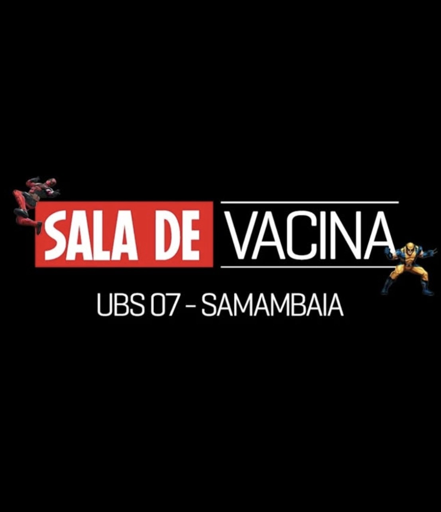
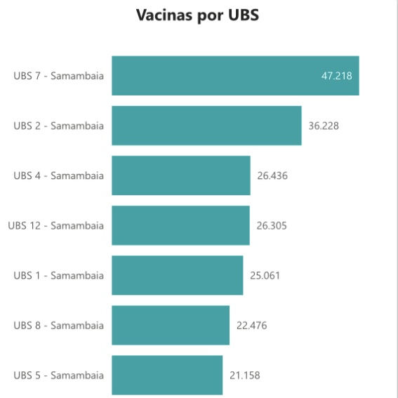
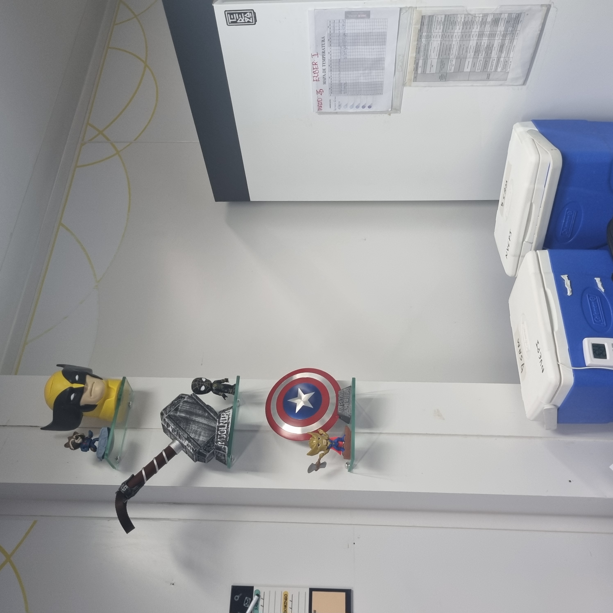

UBS 07 - Samambaia

INFORMAÇÕES
Horário de funcionamento: 08h até 18h30.
Chegar cedo!
Levar documentos pessoais e cartão de vacina!
Temos todas as vacinas do calendário vacinal.
Para crianças, adultos, idosos e populações especiais.
Instagram: @ubs_7_sam
Chegar cedo!
Levar documentos pessoais e cartão de vacina!
Temos todas as vacinas do calendário vacinal.
Para crianças, adultos, idosos e populações especiais.
Instagram: @ubs_7_sam

UNIDADE QUE MAIS VACINA EM SAMAMBAIA
Segundo dados do portal Infosaúde-DF, a sala de vacina da UBS 7 de Samambaia é a que mais vacinou na região administrativa no período de 2024-2025.
A eficiência e cuidado dos funcionários são um diferencial que contribuem para que os números de vacinação sejam elevados.
Dados: Clique aqui
Dados: Clique aqui

VACINA NAS ESCOLAS
A UBS 7 de Samambaia segue as orientações do Ministério da Saúde, realizando campanhas de vacinação nas escolas, ampliando o acesso desse direito tão importante.

CRIE VIRTUAL
O Centro de Referência para Imunobiológicos Especiais (CRIE) virtual é um sistema que permite às pessoas que necessitam de vacinas especiais não disponíveis no calendário básico de vacinação, tenham acesso a esses insumos pelo SUS. Nossa unidade possui um CRIE virtual. Foi a primeira unidade de Samambaia a implementar esse sistema, como um teste para a rede. Se você tem alguma condição especial, é possível solicitar avaliação na unidade pelo QR code da imagem.
Para mais informações, visite:aqui
Para mais informações, visite:aqui
Esse site é um projeto para reforçar a importância de um SUS que dá certo. Sabe-se que o Brasil é referência para vacinação, mas também é importante ressaltar e valorizar o serviço dos funcionários responsáveis por fazer a sala de vacinação dar certo na esfera regional.
O projeto foi realizado como uma intervenção de Humanização, de acordo com as diretrizes da Política Nacional de Humanização, do Ministério da Saúde. A intervenção faz parte do programa de residência médica desenvolvida na unidade.
O projeto foi realizado como uma intervenção de Humanização, de acordo com as diretrizes da Política Nacional de Humanização, do Ministério da Saúde. A intervenção faz parte do programa de residência médica desenvolvida na unidade.